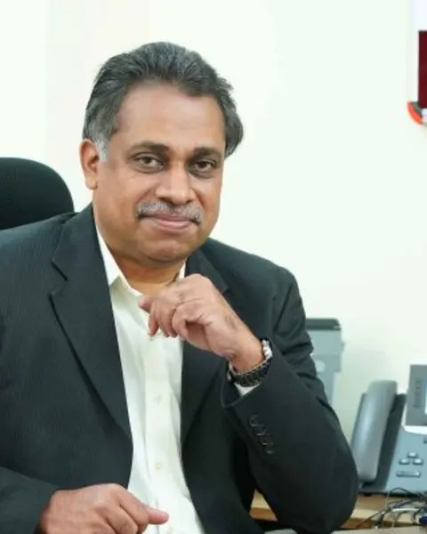
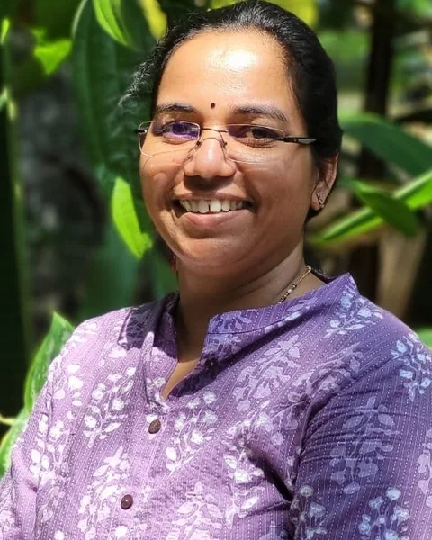
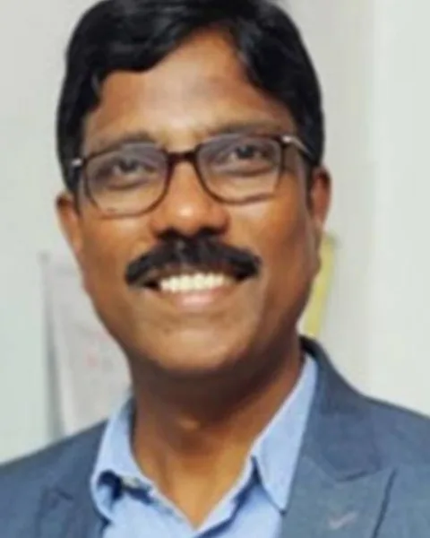
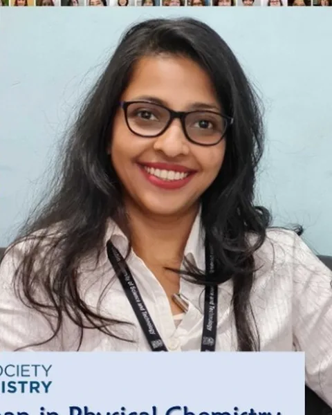
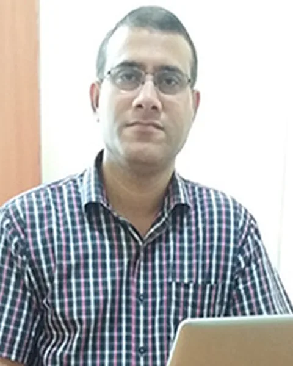
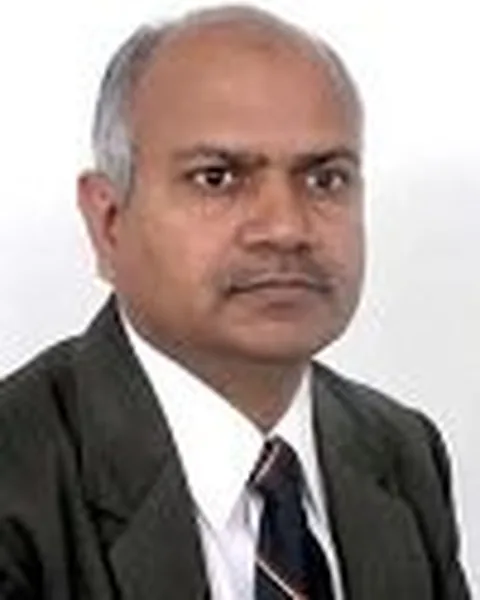
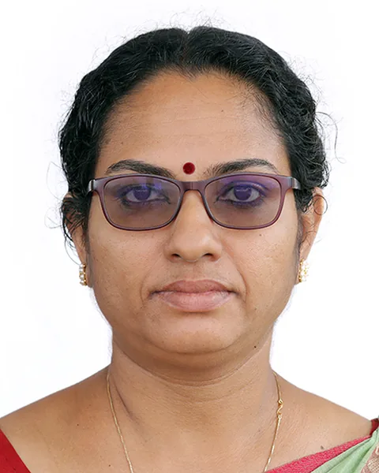
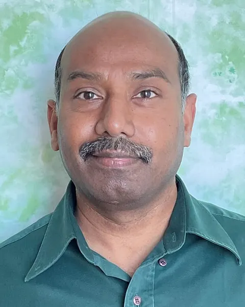

By air
Thiruvananthapuram International Airport
Approximately 30 km from the resort; about one hour by road.
Computational and Machine Learning Modelling of Molecules and Materials
3–6 December 2026 · Club Mahindra Poovar, Kerala

Programme highlight
E. D. Jemmis
See Saturday’s programmeCM4 2026 brings together researchers who use computation to explain and predict the behaviour of molecules and materials. The programme examines bonding in small rings and clusters, how solvents and electric fields influence reaction mechanisms and selectivity, and how modelling can guide the design of catalysts, batteries, semiconductor materials and drug candidates.
The talks and posters draw on quantum chemistry, molecular simulation and machine learning. They explore how automated searches can identify plausible reaction pathways, how machine-learning force fields can extend the scale of atomistic simulations, and how predictions can be tested against experiment.
The meeting also includes a special lecture by Professor E. D. Jemmis and a session celebrating his contributions to theoretical chemistry.
3–6 December 2026 · All times IST
69 participants from India and abroad


Conference organisers will arrange pick-up and drop-off for participants from Thiruvananthapuram International Airport and Thiruvananthapuram Central railway station.
By air
Approximately 30 km from the resort; about one hour by road.
By train
Approximately 35 km from the resort.


Patron

Convenor · Digital University Kerala

Coordinator · IISER Thiruvananthapuram

Digital University Kerala

Digital University Kerala

Srinivasa Ramanujan Institute for Basic Sciences

University of Calicut

Tezpur University

NIPER Mohali

IIT Indore

CSIR-CFTRI

Presidency University

CUSAT

Shiv Nadar University

IIT Hyderabad

Amrita Vishwa Vidyapeetham

NIT Calicut

UT Southwestern

IIT Kanpur

IISER Mohali

Consultant, Drug Discovery